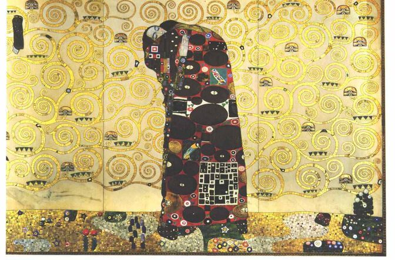

Gustav Klimt,1862 - 1918,"Symbolism,Art Nouveau",Austrian,"Gustav Klimt (July 14, 1862 – February 6, 1918) was an Austrian symbolist painter and one of the most prominent members of the Vienna Secession movement. Klimt is noted for his paintings, murals, sketches, and other objets d'art. Klimt's primary subject was the female body, and his works are marked by a frank eroticism. In addition to his figurative works, which include allegories and portraits, he painted landscapes. Among the artists of the Vienna Secession, Klimt was the most influenced by Japanese art and its methods.",http://en.wikipedia.org/wiki/Gustav_Klimt,117
